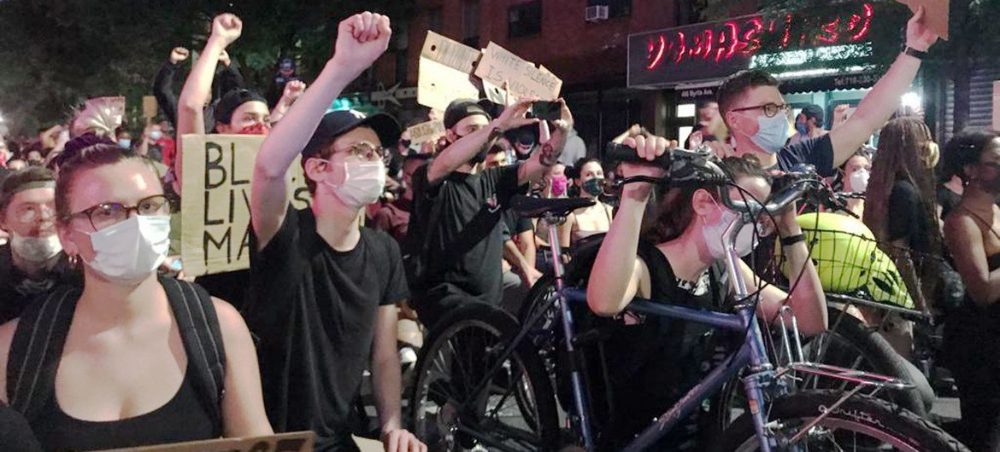

Journalist and media workers suffer attacks the most, at protests
By Stephen Anti
New York, June 2022
Protests across the world constituted the largest form of political violence and demonstrations involving Journalists and media workers in the first quarter of 2022. Analysis of data from The Armed Conflict Location & Event Data Project (ACLED) shows that almost 9,000 protests were recorded at various locations across the world, as political violence and clampdowns on media freedoms spurred various forms of agitations. Violence against civilians, riots, battles and explosions are among some of the violent events across the world in which journalists and media workers were attacked in the line of their work.

Photo Credit: Sarah Skaffidi. Protesters demonstrate against police brutality and racial injustice in Brooklyn, New York.
According to the United Nations Educational, Scientific and Cultural Organization (UNESCO)
‘Harassment, arrests and physical violence against journalists, mostly by government security forces and sometimes by protestors, have risen in recent years. Press freedom and freedom of expression has been impacted in many countries by these attacks” (Smyth Frank, UNESCO, Safety of journalists covering protests : preserving freedom of the press during times of turmoil)
The ACLED data analysis also revealed that Karachi, Hyderabad, Peshwawar, Lahor, sukkur were the top 5 locations in the world where more journalists and media workers suffered attacks in the line of their work.
Political demonstrations across the world
Violence against civilians
Strategic developments
Protests
Riots
Explosions/Remote violence
Battles
Map showing locations and number of attacks recorded
The Pakistani city of Karachi recorded 287 incidents of violent attacks on Journalists and media workers during the first quarter of 2022 and topped the list of 5 locations, followed by the Indian city of Hyderabad with 278 incidents.Peshawar, Lahore, Sukkur, which are all Pakistani cities, also recorded 276, 259, and 243 incidents